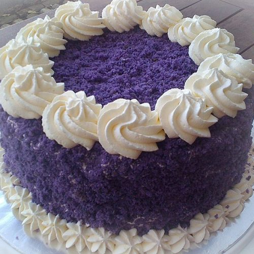

Ube Cake

Description
The ube cake is a Filipino dessert that has a unique purple color.
It is sweet, filling and an incredibly popular delicacy there.
Ingredients
Cake Batter
- 1 Cup All Purpose Flour
- 1/4 Cup White Sugar
- 1/2 tbsp White Sugar
- 1/2 tbsp Baking Powder
- 1/2 tsp Salt
- 4 Egg Yolks
- 1/4 Cup Cooking Oil
- 1/3 Cup Milk
- 2 tbsp Ube Flavoring
- 1/4 Cup Ube Halaya
Meringue
- 4 Egg Whites
- 1/2 tsp Cream of Tartar
- 1/4 Cup of Sugar
Frosting
- 2 Cups All Purpose Cream
- 3/4 Cup White Sugar
- 1 Cup Cream Cheese
- 1/2 tsp Vanilla Essence
Instructions
Meringue Process
- Whisk egg whites and cream of tartar until stiff peaks form. Gradually
add sugar during the mixing process until the desired consistency is
reached.
Cake Batter Process
- Preheat oven to 340 F
- Sift the flour and baking power into mixing bowl. Then add salt and
white sugar. Mix until ingredients are well incorporated and set aside.
- In a separate bowl, pour egg yolks, milk, ube flavoring and ube halaya
and mix them well.
- Gradually add the dry ingredients and carefully stir the mixture until
a smooth consistency is reached.
- Once smooth, carefully add and fold the meringue into the batter.
- Pour the ube mixture into two pans. Tap the pans to remove air bubbles.
- Bake for 28-35 minutes.
- Check if cake is ready by poking a toothpick in the middle and seeing if
it comes out clean. If clean, carefully flip it over onto a cooling rack.
Frosting and Assembly Process
- Add cream cheese, white sugar, and vanilla and beat them together until smooth.
- Take on of the cates, slice it in half and use a blender to create crumbles to
decorate the cake.
- Layer the remaining pieces of cake with frosting between each layer. Cover the sides
with Frosting and apply the crumbled cake.
- Lastly, pipe a circle of swirls to the efe of the surface of your cake.
- Enjoy!
Return to home page